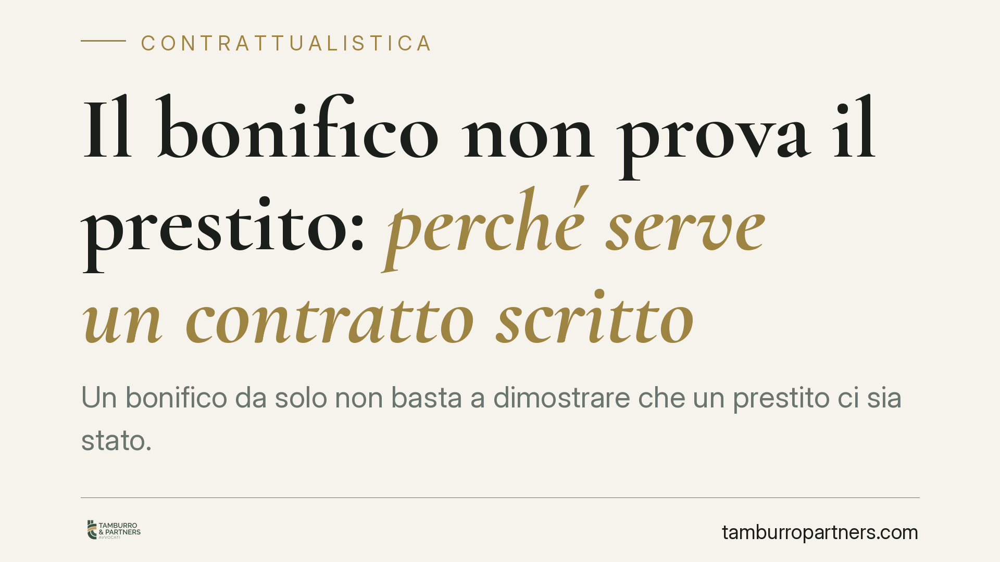

Il bonifico non prova il prestito: perché serve un contratto scritto
Un bonifico da solo non basta a dimostrare che un prestito ci sia stato. Lo ribadisce la Corte d'Appello di Venezia: chi versa denaro deve provare non solo il trasferimento, ma anche l'accordo di restituzione. Una distinzione decisiva per chi presta soldi ad amici o parenti senza mettere nulla per iscritto.

Il fatto
Chi trasferisce denaro con un bonifico e ne chiede poi la restituzione si trova spesso davanti a un ostacolo probatorio che sottovaluta. La Corte d'Appello di Venezia ha ribadito un principio consolidato: la sola causale o l'esistenza di un bonifico non dimostrano che le somme siano state date a titolo di prestito.
Il motivo è semplice. Un versamento di denaro può avere molte cause: una donazione, il pagamento di un debito preesistente, una liberalità tra familiari, l'adempimento di un obbligo. Il bonifico prova che il denaro è passato da un conto all'altro, non *perché* è passato. E senza quel "perché", non c'è obbligo di restituzione da far valere.
Inquadramento normativo
Il punto di riferimento è l'art. 2697 del Codice civile, che regola l'onere della prova. La norma stabilisce che chi vuol far valere un diritto in giudizio deve provare i fatti che ne costituiscono il fondamento.
Applicato al prestito, questo significa che chi agisce per riavere il denaro (il presunto creditore) deve dimostrare l'esistenza di un contratto di mutuo, cioè di un accordo in base al quale la somma è stata consegnata con l'obbligo di essere restituita. Il mutuo è disciplinato dagli artt. 1813 e seguenti del Codice civile: è un contratto reale, che si perfeziona con la consegna, ma resta un contratto, e come tale va provato nei suoi elementi essenziali.
La giurisprudenza è costante nel ritenere che la prova del solo trasferimento di denaro non è sufficiente a fondare la domanda di restituzione. Occorre provare anche il titolo, cioè la causa del versamento. In assenza, il rischio è che il denaro venga qualificato come donazione o come pagamento privo di obbligo restitutorio.
Implicazioni pratiche
La lettura ha ricadute concrete per chiunque presti denaro senza formalità, situazione frequentissima tra amici, familiari, soci di piccole imprese.
Chi versa la somma confidando nella parola data si espone a un doppio problema. Sul piano sostanziale, se manca un accordo dimostrabile, potrebbe non avere diritto alla restituzione. Sul piano processuale, anche quando il diritto esiste, potrebbe non riuscire a provarlo davanti al giudice.
La causale del bonifico aiuta ma non risolve. Scrivere "prestito" nella descrizione dell'operazione è un indizio, non una prova piena: il destinatario può sempre contestare la qualificazione, sostenendo ad esempio che si trattava di una restituzione di un debito precedente o di una donazione.
Attenzione anche al profilo temporale. Se il denaro viene versato senza titolo e passa troppo tempo, la ricostruzione dei fatti diventa più difficile e la posizione di chi ha versato si indebolisce ulteriormente.
Cosa fare in concreto
- Mettete per iscritto ogni prestito, anche tra persone di fiducia. Basta una scrittura privata semplice che indichi importo, data, obbligo di restituzione ed eventuale scadenza.
- Fate firmare una ricognizione di debito quando la somma è già stata versata: è un documento con cui il debitore riconosce di dover restituire, e agevola la prova ai sensi dell'art. 1988 c.c.
- Conservate tracce documentali coerenti: causale del bonifico, messaggi, e-mail o chat in cui si parla della restituzione. Non sono prova piena ma rafforzano la posizione.
- Definite tempi e modalità di rientro per iscritto, così da poter agire tempestivamente in caso di inadempimento.
- Prima di agire in giudizio, valutate con un professionista la solidità del quadro probatorio: consigliamo di raccogliere e ordinare i documenti fin dall'inizio del rapporto, non quando sorge il contenzioso.
In sintesi
Il principio è chiaro: il denaro che esce dal conto non torna indietro per il solo fatto di essere uscito. Torna indietro se si prova che era un prestito. La differenza tra un gesto di fiducia e una perdita definitiva sta spesso in un foglio firmato.
Contributo informativo a cura di Tamburro & Partners - Avv. Giuseppe Tamburro. Non costituisce parere legale.
Ogni contratto ha il suo equilibrio.
Se vuoi una revisione delle clausole o una redazione su misura, scrivi allo studio. Ti rispondiamo entro un giorno lavorativo.